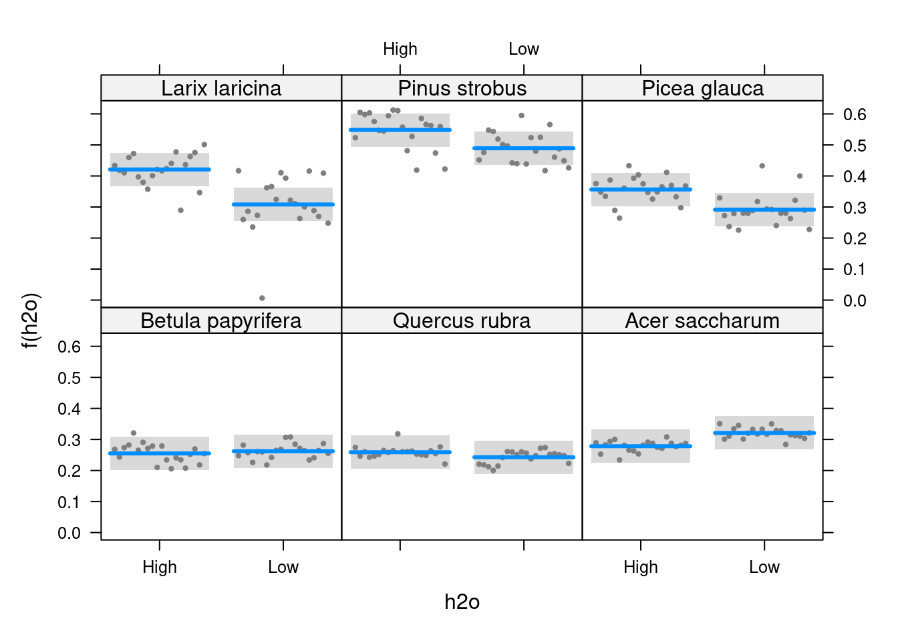
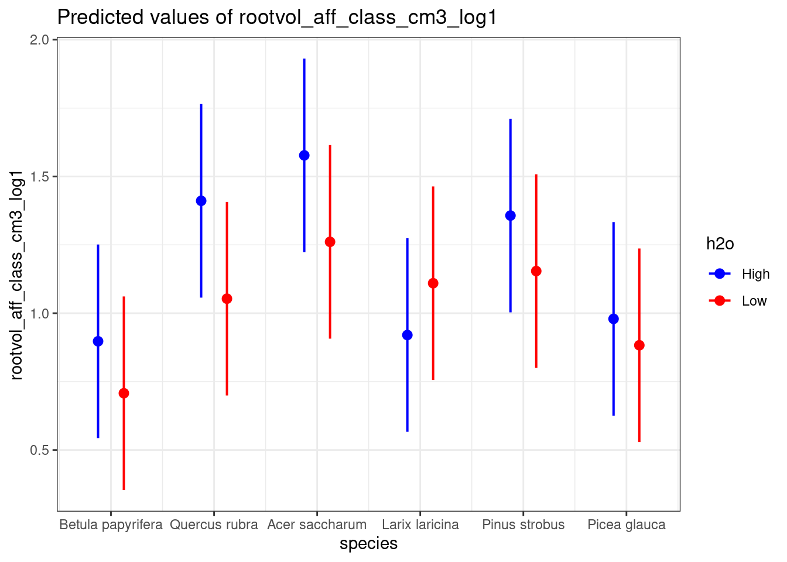

getwd()Young temperate tree species show fine-root trait acclimation to differences in water availability
Data preparation, exploration, figures and Linear mixed effects models
Preparation
Loading the libraries
Not all packages are needed in this analysis
library(plyr)
library(ggplot2)
library(tidyverse)── Attaching core tidyverse packages ──────────────────────── tidyverse 2.0.0 ──
✔ dplyr 1.1.4 ✔ readr 2.1.5
✔ forcats 1.0.0 ✔ stringr 1.5.1
✔ lubridate 1.9.3 ✔ tibble 3.2.1
✔ purrr 1.0.2 ✔ tidyr 1.3.1
── Conflicts ────────────────────────────────────────── tidyverse_conflicts() ──
✖ dplyr::arrange() masks plyr::arrange()
✖ purrr::compact() masks plyr::compact()
✖ dplyr::count() masks plyr::count()
✖ dplyr::desc() masks plyr::desc()
✖ dplyr::failwith() masks plyr::failwith()
✖ dplyr::filter() masks stats::filter()
✖ dplyr::id() masks plyr::id()
✖ dplyr::lag() masks stats::lag()
✖ dplyr::mutate() masks plyr::mutate()
✖ dplyr::rename() masks plyr::rename()
✖ dplyr::summarise() masks plyr::summarise()
✖ dplyr::summarize() masks plyr::summarize()
ℹ Use the conflicted package (<http://conflicted.r-lib.org/>) to force all conflicts to become errorslibrary(magrittr)
Attaching package: 'magrittr'
The following object is masked from 'package:purrr':
set_names
The following object is masked from 'package:tidyr':
extractlibrary(lme4)Loading required package: Matrix
Attaching package: 'Matrix'
The following objects are masked from 'package:tidyr':
expand, pack, unpacklibrary(pbkrtest)
library(lmerTest)
Attaching package: 'lmerTest'
The following object is masked from 'package:lme4':
lmer
The following object is masked from 'package:stats':
steplibrary(emmeans)
library(MuMIn)
library(car)Loading required package: carData
Attaching package: 'car'
The following object is masked from 'package:dplyr':
recode
The following object is masked from 'package:purrr':
somelibrary(MASS)
Attaching package: 'MASS'
The following object is masked from 'package:dplyr':
selectlibrary(bestNormalize)
Attaching package: 'bestNormalize'
The following object is masked from 'package:MASS':
boxcoxlibrary(cowplot)
Attaching package: 'cowplot'
The following object is masked from 'package:lubridate':
stamplibrary(readxl)
library(psych)
Attaching package: 'psych'
The following object is masked from 'package:car':
logit
The following objects are masked from 'package:ggplot2':
%+%, alphalibrary(vegan)Loading required package: permute
Loading required package: lattice
This is vegan 2.6-6library(factoextra)Welcome! Want to learn more? See two factoextra-related books at https://goo.gl/ve3WBalibrary(ggcorrplot)
library(Hmisc)
Attaching package: 'Hmisc'
The following object is masked from 'package:psych':
describe
The following objects are masked from 'package:dplyr':
src, summarize
The following objects are masked from 'package:plyr':
is.discrete, summarize
The following objects are masked from 'package:base':
format.pval, unitslibrary(interactions)
library(visreg)
library(sjPlot)
Attaching package: 'sjPlot'
The following objects are masked from 'package:cowplot':
plot_grid, save_plotlibrary(effects)Use the command
lattice::trellis.par.set(effectsTheme())
to customize lattice options for effects plots.
See ?effectsTheme for details.Load the raw data
pilot <- read.csv("RootsMono_IDENT_SSM2018_06172024_raw.csv", stringsAsFactors = FALSE,
strip.white = TRUE, na.strings = c("NA", ""))Check the data
(output not shown)
options(max.print = 1e6)
duplicated(pilot)
head(pilot)
tail(pilot)
names(pilot)
attributes(pilot)
dim(pilot)
summary(pilot)
str(pilot)
pilot[,1]Root length density (RLD)
Should be in the more common cm cm-3 rather than m m-3
RLD_cm_cm3 <- vector(length = length(pilot$RLD_m_m3))
for(i in 1:length(pilot$RLD_m_m3)){
RLD_cm_cm3[i] <- (pilot$RLD_m_m3[i]/(10000))
}
pilot <- cbind(pilot, RLD_cm_cm3)
names(pilot)[71] <- "RLD_cm_cm3"Specific root (surface) area (SRA; cm-2 g)
We will use the simpler and safer dplyr syntax for this one
pilot <- pilot %>%
dplyr::mutate(SRA_cm2_g = surfarea_cm2 / tot_dry_weight_aff)Subset the absorptive fine roots
We’re mostly interested in the absorptive fine roots of our six North American tree species because our experiment involves a high and low water treatment. The absorptive fine roots show the fastest and most dynamic response to changes in water availability, and also serve as the primary root fraction for water and nutrient uptake from the soil (Guo et al. 2008).
absorptive <- subset(pilot,
fraction == "AF" ,
select = c(ID, block_plot, block, plot, sp, depth,
tot_dry_weight_aff, FRB_g_cm3, SRL_m_g, RLD_m_m3,
mycelium, length_aff_cm, surfarea_cm2, avgdiam_mm,
rootvol_aff_class_cm3, rtd_g_cm3, tips, forks,
crossings, ntips_length_n_cm, nforks_length_n_cm,
rdmc_dry_g_fresh_g, h2o, RLD_cm_cm3, SRA_cm2_g))
names(absorptive)[5] <- "species"
names(absorptive)[6] <- "Soil_depth"
names(absorptive)[16] <- "RTD_g_cm3"
names(absorptive)[22] <- "RDMC_dry_g_fresh_g"Convert to factor and re-order
Some of the original variables need to be converted to factor and re-ordered to function properly in downstream processing.
absorptive$block_plot <- as.factor(absorptive$block_plot)
absorptive$block <- as.factor(absorptive$block)
absorptive <- dplyr::mutate(absorptive,
species = case_when(species == "BEPA" ~ "Betula papyrifera",
species == "QURU" ~ "Quercus rubra",
species == "ACSA" ~ "Acer saccharum",
species == "LALA" ~ "Larix laricina",
species == "PIST" ~ "Pinus strobus",
species == "PIGL" ~ "Picea glauca"))
absorptive$species <- factor(absorptive$species,
levels = c("Betula papyrifera",
"Quercus rubra",
"Acer saccharum",
"Larix laricina",
"Pinus strobus",
"Picea glauca"))
absorptive <- absorptive %>%
dplyr::mutate(Soil_depth = str_replace_all(Soil_depth, "_", "-")) %>%
dplyr::mutate(Soil_depth = factor(Soil_depth,
levels = c("0-5", "5-10",
"10-15", "15-20",
"20-30")))
absorptive <- absorptive %>%
mutate(h2o = case_when(h2o == "H" ~ "High",
h2o == "L" ~ "Low")) %>%
mutate(h2o = factor(h2o, levels = c("High", "Low")))Data exploration
To get an overview of our data, we will first perform a Principal Component Analysis (PCA). PCA will help us to identify collinearity among our variables and to focus on the ones that show the strongest influence. Please note that all the other root fractions (transportive fine roots, dead fine roots, fine root fragments, and coarse roots) were explored, but are not included in this script for brevity.
Select variables for PCA
collinearity_matrix <- subset(absorptive, select = c(FRB_g_cm3,
SRL_m_g,
RLD_cm_cm3,
avgdiam_mm,
rootvol_aff_class_cm3,
RTD_g_cm3,
ntips_length_n_cm,
nforks_length_n_cm,
RDMC_dry_g_fresh_g,
SRA_cm2_g))
collinearity_matrix <- as.data.frame(collinearity_matrix)
new_names_traits <- c("FRB", "SRL", "RLD", "Diam", "Vol",
"RTD", "RBD", "NF", "RDMC", "SRA")
colnames(collinearity_matrix) <- new_names_traitsPerform PCA
Different units need to be standardized for PCA (vegan package). It’s better to use method standardize because we want to give equal importance to all "species" and remove any scale-related bias in the analysis. Hellinger on the other hand reduces the impact of rare species and emphasizes the importance of dominant species. It works well for data with many zeros (sparse data) and is often used in ecological distance metrics.
collinearity_matrix_z <- decostand(collinearity_matrix, method = "standardize")
1apply(collinearity_matrix_z, 2, mean)
2apply(collinearity_matrix_z, 2, sd)
3coll.mat.z.pca <- prcomp(collinearity_matrix_z)
summary(coll.mat.z.pca)- 1
- Data is now centered (means ~ 0),
- 2
- data is now scaled (standard deviations = 1),
- 3
- principal Components Analysis (PCA)
Simple PCA exploration plot with data points and traits
biplot(coll.mat.z.pca)Plot of eigenvalues ordered from largest to the smallest. The number of components is determined at the point, beyond which the remaining eigenvalues are all relatively small and of comparable size (Jolliffe and Cadima 2016; Legendre and Gallagher 2001).
Scree plot
factoextra::fviz_eig(coll.mat.z.pca, addlabels = TRUE, ylim = c(0, 50))The first axis do not decline very rapidly
Extract the results for variables from a PCA
pca_trait_var <- get_pca_var(coll.mat.z.pca)
pca_trait_var$coord
4pca_trait_var$cos2
5pca_trait_var$contrib
6fviz_cos2(coll.mat.z.pca, choice = "var", axes = 1:2)- 4
- Represents the quality of representation for variables on the factor map. It’s calculated as the squared coordinates: \[ \text{var.cos2} = \text{var.coord} \times \text{var.coord} \]
- 5
- Contains the contributions (in percentage) of the variables to the principal components. The contribution of a variable (var) to a given principal component is (in percentage): \[ \text{\% contribution} = \frac{\text{var.cos2} \times 100}{\text{total cos2 of the component}} \]
- 6
-
Total
cos2of variables onDim.1andDim.2(plot): FRB, RLD, NF, RBD, and Diam are most important.
Color by cos2 values: quality on the factor map –> A high cos2 indicates a good representation of the variable on the principal component (variable positioned further outward). A low cos2 indicates that the variable is not perfectly represented by the PCs. In this case the variable is close to the center. For a given variable, the sum of the cos2 on all the principal components is equal to one if a variable is perfectly represented by only two principal components (Dim.1 & Dim.2), the sum of the cos2 on these two PCs is equal to one.
fviz_pca_var(coll.mat.z.pca, col.var = "cos2",
gradient.cols = c("#00AFBB", "#E7B800", "#FC4E07"),
repel = TRUE, title = "Principal Component Analysis - Root traits")Pearson correlations
Calculate Pearson correlation matrix
cor_matrix_traits <- cor(collinearity_matrix, method = "pearson")
cor_matrix_traits <- as.data.frame(cor_matrix_traits)Pearson’s correlation coefficients in a heatmap (not shown in paper)
ggcorrplot(cor_matrix_traits, hc.order = TRUE, type = "lower",
lab = TRUE)Hirarchical variable clustering
absorptive_cluster <- as.data.frame(absorptive)
names(absorptive_cluster)[8] <- "FRB"
names(absorptive_cluster)[9] <- "SRL"
names(absorptive_cluster)[10] <- "RLD"
names(absorptive_cluster)[14] <- "Diam"
names(absorptive_cluster)[15] <- "Vol"
names(absorptive_cluster)[16] <- "RTD"
names(absorptive_cluster)[20] <- "RBD"
names(absorptive_cluster)[22] <- "RDMC"
names(absorptive_cluster)[25] <- "SRA"Reduced set of traits
plot(varclus(~., data = absorptive_cluster[, c(8, 9, 10, 14, 15, 16, 20, 22, 25)]),
las = 1, cex.lab = 1.5)We can see that certain variables are clustered together. We will only pick one of these clustered variables for the main part of the study.
3-way-interaction-visualization
We hypothesize that there is an interaction between species * soil depth * H2O. Different species grow their roots differently depending on soil depths, and soil depth has a strong influence on soil moisture. To test our assumption, we explore these variables below. Link to the R package: https://interactions.jacob-long.com/reference/cat_plot.html
lm_probing_inter_rld <- lm(RLD_cm_cm3 ~ species * Soil_depth * h2o, data = absorptive)
cat_plot_lmTraits <- cat_plot(lm_probing_inter_rld, pred = species,
modx = Soil_depth, mod2 = h2o,
interval = TRUE, plot.points = TRUE,
legend.main = "Soil depth",
mod2.labels = c("H2O = High", "H2O = Low"),
main.title = "Three-way interactions based on linear regression")
cat_plot_lmTraits + labs(x = expression(),
y = expression(Root ~ length ~ density ~ "("*cm ~ cm^"-3"*")")) +
theme(axis.text.x = element_text(face = "italic", angle = 25, hjust = 1))Graphical “outlier” detection
Root branching density (RBD; n cm-1)
ggplot(data = absorptive, aes(y = ntips_length_n_cm, x = species, fill = h2o)) +
geom_boxplot(width = 0.6, position = position_dodge(width = 0.7),
outlier.color = "white", notch = TRUE) + geom_jitter() +
labs(x = "tree species", y = "RBD_n_cm") +
scale_fill_viridis_d(alpha = 1,
begin = 0.4,
end = 0.9,
direction = 1,
option = "B") +
theme_light() +
theme(aspect.ratio = 0.75,
text = element_text(size = 16),
axis.text = element_text(size = 14),
axis.text.x = element_text(face = "italic", angle = 15, hjust = 1))According to the boxplots, there could be a few outliers. However, we have no notes that indicate a measurement error during root processing, so these are most likely no true outliers.
absorptive %>% group_by(ntips_length_n_cm) %>% summarise(n = n()) %>% filter(n>1)There are quite a few non-unique values in the "ntips_length_n_cm"
subset(absorptive$ntips_length_n_cm, absorptive$species == "Larix laricina")There is only one very high value for Larix laricina = 7.99 (n cm-1), but this is not a true outlier.
Root tissue density (RTD; g cm-3)
ggplot(data = absorptive, aes(y = RTD_g_cm3, x = species, fill = h2o)) +
geom_boxplot(width = 0.6, position = position_dodge(width = 0.7),
outlier.color = "white", notch = TRUE) + geom_jitter() +
labs(x = "tree species", y = "RTD_g_cm3") +
scale_fill_viridis_d(alpha = 1,
begin = 0.4,
end = 0.9,
direction = 1,
option = "B") +
theme_light() +
theme(aspect.ratio = 0.75,
text = element_text(size = 16),
axis.text = element_text(size = 14),
axis.text.x = element_text(face = "italic", angle = 15, hjust = 1))A few values of RTD seem strange: absorptive = line 151 (18.617 g cm-3; absorptive = line 151; 8_2_PIGL_0_5_High = This sample shows a very small volume and a very high weight (from 100 % fragments added) in the “RootsMonoSSM2018_forR_f100prop.xlsx” file. This sample also has mycelium present, and this could have increased the weight to volume ratio. The rootvol_aff_class_cm3 = 0.057 is very low compared to the other samples! This might cause the density to be very high. Delete this outlier because it could have been an error coming from mycelium present in the sample (some samples had mycelium present, and we removed it as best as we could in a reasonable amount of time).
Remove RTD outlier from absorptive. Create copy to not meddle with the original data.frame
absorptive_rtd_outRem <- absorptive
absorptive_rtd_outRem$RTD_g_cm3[151] <- NARTD after outlier (18.617 g cm-3) removed (NA)
ggplot(data = absorptive_rtd_outRem, aes(y = RTD_g_cm3, x = species, fill = h2o)) +
geom_boxplot(width = 0.6, position = position_dodge(width = 0.7),
outlier.color = "white",
notch = TRUE, na.rm = TRUE) + geom_jitter() +
labs(x = "tree species", y = "RTD_g_cm3") +
scale_fill_viridis_d(alpha = 1,
begin = 0.4,
end = 0.9,
direction = 1,
option = "B") +
theme_light() +
theme(aspect.ratio = 0.75,
text = element_text(size = 16),
axis.text = element_text(size = 14),
axis.text.x = element_text(face = "italic", angle = 15, hjust = 1))We further investigate the highest values of RTD
absorptive_rtd_outRem$rtd_g_cm3 >= 2.5
absorptive_rtd_outRem$rtd_g_cm3[86]
absorptive_rtd_outRem[86,]6_13_PIST_05_Low –> No mycelium present in excel table (“RootsMonoSSM2018_forR_f100prop.xlsx”), so there is no justification to remove this value (2.806 g cm-3).
Specific root (surface) area (SRA; cm-2 g)
ggplot(data = absorptive, aes(y = SRA_cm2_g, x = species, fill = h2o)) +
geom_boxplot(width = 0.6, position = position_dodge(width = 0.7),
outlier.color = "white", notch = TRUE) + geom_jitter() +
labs(x = "tree species", y = "SRA_cm2_g") +
scale_fill_viridis_d(alpha = 1,
begin = 0.4,
end = 0.9,
direction = 1,
option = "B") +
theme_light() +
theme(aspect.ratio = 0.75,
text = element_text(size = 16),
axis.text = element_text(size = 14),
axis.text.x = element_text(face = "italic", angle = 15, hjust = 1))There’s one extreme outlier around 2500 cm-2 g. It’s most likely Acer saccharum H2O = Low
absorptive$sra_cm2_g >= 2400
absorptive$sra_cm2_g[146]
absorptive[146,]2502.233 cm-2 g, 3, 21, Acer saccharum, H2O = Low, 0-5. Checked in the excel table “RootsMonoSSM2018_forR_f100prop.xlsx” and there was no mycelium present. Furthermore, the other variables seem normal, so there’s no reason to remove this value (no true outlier).
Summarize
Absorptive fine roots
sum_absor <- absorptive %>%
dplyr::select(species, h2o, Soil_depth, SRL_m_g, length_aff_cm, avgdiam_mm,
rootvol_aff_class_cm3, RTD_g_cm3, ntips_length_n_cm,
RDMC_dry_g_fresh_g, FRB_g_cm3, surfarea_cm2, SRA_cm2_g,
RLD_cm_cm3) %>%
dplyr::group_by(species, h2o, Soil_depth) %>%
na.omit() %>%
dplyr::summarise(SRL_M_G = mean (SRL_m_g),
SRL_m_g_se = (sd(SRL_m_g) / sqrt(n())),
LENGTH_cm = mean (length_aff_cm),
LENGTH_cm_se = (sd(length_aff_cm) / sqrt(n())),
Diam_mm = mean (avgdiam_mm),
Diam_mm_se = (sd(avgdiam_mm) / sqrt(n())),
Vol_cm3 = mean (rootvol_aff_class_cm3),
Vol_cm3_se = (sd(rootvol_aff_class_cm3) / sqrt(n())),
RTD_G_CM3 = mean (RTD_g_cm3),
RTD_g_cm3_se = (sd(RTD_g_cm3) / sqrt(n())),
RBD_n_cm = mean (ntips_length_n_cm),
RBD_n_cm_se = (sd(ntips_length_n_cm) / sqrt(n())),
RDMC_g_g = mean (RDMC_dry_g_fresh_g),
RDMC_g_g_se = (sd(RDMC_dry_g_fresh_g) / sqrt(n())),
FRB_G_CM3 = mean (FRB_g_cm3),
FRB_g_cm3_se = (sd(FRB_g_cm3) / sqrt(n())),
SURFAREA_cm2 = mean (surfarea_cm2),
SURFAREA_cm2_se = (sd(surfarea_cm2) / sqrt(n())),
SRA_CM2_G = mean (SRA_cm2_g),
SRA_cm2_se = (sd(SRA_cm2_g) / sqrt(n())),
RLD_CM_CM3 = mean (RLD_cm_cm3),
RLD_CM_CM3_se = (sd(RLD_cm_cm3) / sqrt(n())),) %>%
dplyr::mutate(group = interaction(species, h2o, species = "_"))Summarize RTD with one outlier removed
sum_absor_rtd_outRem <- absorptive_rtd_outRem %>%
dplyr::select(species, h2o, Soil_depth, RTD_g_cm3) %>%
dplyr::group_by(species, h2o, Soil_depth) %>%
na.omit() %>%
dplyr::summarise(RTD_G_CM3 = mean (RTD_g_cm3),
RTD_g_cm3_se = (sd(RTD_g_cm3) / sqrt(n())),) %>%
dplyr::mutate(group = interaction(species, h2o, species = "_"))Main figures
Root branching density (RBD; n cm-1)
If we have a continuous, numerical variable, it’s typically more appropriate to use geom_col() rather than geom_bar(). geom_col() geometry is specifically designed for creating bar plots with a continuous, numerical variable. The height of the bars directly represents the values of the variable. By default, geom_bar() calculates the count or frequency of observations within each category and represents them as bar heights. If our data is already summarised or includes values for y (height of the bars), we should use geom_col(). If, however, we want ggplot() to count up the number of rows in our dataset, we should use geom_bar(). geom_bar() basically runs the count() function and plots it.
ggplot(data = sum_absor, aes(x = Soil_depth, y = RBD_n_cm, fill = h2o)) +
geom_col(width = 0.7, position = position_dodge(0.7)) +
facet_grid(.~ species) +
geom_linerange(aes(ymin = RBD_n_cm - RBD_n_cm_se,
ymax = RBD_n_cm + RBD_n_cm_se),
position = position_dodge(width = 0.7)) +
labs(x = expression(Soil ~ depth ~ "("*cm*")"),
y = expression(Root ~ branching ~ density ~ "("*n ~ cm^"-1"*")")) +
labs(fill = expression(H[2]*O)) +
scale_fill_manual(values = c("#33CCFF", "#ff9900")) +
theme_bw() +
theme(legend.background = element_rect(fill = "white",
linewidth = 4,
colour = "white"),
legend.justification = c(0, 1),
legend.position.inside = "left",
legend.position = c(0.03, 0.95),
axis.ticks = element_line(colour = "grey70",
linewidth = 0.2),
panel.grid.major = element_line(colour = "grey70",
linewidth = 0.2),
panel.grid.minor = element_blank(),
strip.text = element_text(face = "italic"),
axis.text.x = element_text(angle = 45,
hjust = 1))Root length density (RLD; cm cm-3)
ggplot(data = sum_absor, aes(x = Soil_depth, y = RLD_CM_CM3, fill = h2o)) +
geom_col(width = 0.7, position = position_dodge(0.7)) +
facet_grid(.~ species) +
geom_linerange(aes(ymin = RLD_CM_CM3 - RLD_CM_CM3_se,
ymax = RLD_CM_CM3 + RLD_CM_CM3_se),
position = position_dodge(width = 0.7)) +
labs(x = expression(Soil ~ depth ~ "("*cm*")"),
y = expression(Root ~ length ~ density ~ "("*cm ~ cm^"-3"*")")) +
labs(fill = expression(H[2]*O)) +
scale_fill_manual(values = c("#33CCFF", "#ff9900")) +
theme_bw() +
theme(legend.background = element_rect(fill = "white",
linewidth = 4,
colour = "white"),
legend.justification = c(0, 1),
legend.position.inside = "left",
legend.position = c(0.03, 0.95),
axis.ticks = element_line(colour = "grey70",
linewidth = 0.2),
panel.grid.major = element_line(colour = "grey70",
linewidth = 0.2),
panel.grid.minor = element_blank(),
strip.text = element_text(face = "italic"),
axis.text.x = element_text(angle = 45,
hjust = 1))Specific root length (SRL; m g-1)
ggplot(data = sum_absor, aes(x = Soil_depth, y = SRL_M_G, fill = h2o)) +
geom_col(width = 0.7, position = position_dodge(0.7)) +
facet_grid(.~ species) +
geom_linerange(aes(ymin = SRL_M_G - SRL_m_g_se,
ymax = SRL_M_G + SRL_m_g_se),
position = position_dodge(width = 0.7)) +
labs(x = expression(Soil ~ depth ~ "("*cm*")"),
y = expression(Specific ~ root ~ length ~ "("*m ~ g^"-1"*")")) +
labs(fill = expression(H[2]*O)) +
scale_fill_manual(values = c("#33CCFF", "#ff9900")) +
theme_bw() +
theme(legend.background = element_rect(fill = "white",
linewidth = 4,
colour = "white"),
legend.justification = c(0, 1),
legend.position.inside = "left",
legend.position = c(0.03, 0.95),
axis.ticks = element_line(colour = "grey70",
linewidth = 0.2),
panel.grid.major = element_line(colour = "grey70",
linewidth = 0.2),
panel.grid.minor = element_blank(),
strip.text = element_text(face = "italic"),
axis.text.x = element_text(angle = 45,
hjust = 1))Root tissue density (RTD; g cm-3)
ggplot(data = sum_absor, aes(x = Soil_depth, y = RTD_G_CM3, fill = h2o)) +
geom_col(width = 0.7, position = position_dodge(0.7)) +
facet_grid(.~ species) +
geom_linerange(aes(ymin = RTD_G_CM3 - RTD_g_cm3_se,
ymax = RTD_G_CM3 + RTD_g_cm3_se),
position = position_dodge(width = 0.7)) +
labs(x = expression(Soil ~ depth ~ "("*cm*")"),
y = expression(Root ~ tissue ~ density ~ "("*g ~ cm^"-3"*")")) +
labs(fill = expression(H[2]*O)) +
scale_fill_manual(values = c("#33CCFF", "#ff9900")) +
theme_bw() +
theme(legend.background = element_rect(fill = "white",
linewidth = 4,
colour = "white"),
legend.justification = c(0, 1),
legend.position.inside = "left",
legend.position = c(0.03, 0.95),
axis.ticks = element_line(colour = "grey70",
linewidth = 0.2),
panel.grid.major = element_line(colour = "grey70",
linewidth = 0.2),
panel.grid.minor = element_blank(),
strip.text = element_text(face = "italic"),
axis.text.x = element_text(angle = 45,
hjust = 1))RTD outlier removed
(outlier = 18.617 g cm-3)
ggplot(data = sum_absor_rtd_outRem, aes(x = Soil_depth, y = RTD_G_CM3, fill = h2o)) +
geom_col(width = 0.7, position = position_dodge(0.7)) +
facet_grid(.~ species) +
geom_linerange(aes(ymin = RTD_G_CM3 - RTD_g_cm3_se,
ymax = RTD_G_CM3 + RTD_g_cm3_se),
position = position_dodge(width = 0.7)) +
labs(x = expression(Soil ~ depth ~ "("*cm*")"),
y = expression(Root ~ tissue ~ density ~ "("*g ~ cm^"-3"*")")) +
labs(fill = expression(H[2]*O)) +
scale_fill_manual(values = c("#33CCFF", "#ff9900")) +
theme_bw() +
theme(legend.background = element_rect(fill = "white",
linewidth = 4,
colour = "white"),
legend.justification = c(0, 1),
legend.position.inside = "left",
legend.position = c(0.53, 0.95),
axis.ticks = element_line(colour = "grey70",
linewidth = 0.2),
panel.grid.major = element_line(colour = "grey70",
linewidth = 0.2),
panel.grid.minor = element_blank(),
strip.text = element_text(face = "italic"),
axis.text.x = element_text(angle = 45,
hjust = 1))Supplementary figures
Specific root area (SRA; cm-2 g)
ggplot(data = sum_absor, aes(x = Soil_depth, y = SRA_CM2_G, fill = h2o)) +
geom_col(width = 0.7, position = position_dodge(0.7)) +
facet_grid(.~ species) +
geom_linerange(aes(ymin = SRA_CM2_G - SRA_cm2_se,
ymax = SRA_CM2_G + SRA_cm2_se),
position = position_dodge(width = 0.7)) +
labs(x = expression(Soil ~ depth ~ "("*cm*")"),
y = expression(Specific ~ root ~ area ~ "("*cm^"-2" ~ g*")")) +
labs(fill = expression(H[2]*O)) +
scale_fill_manual(values = c("#33CCFF", "#ff9900")) +
theme_bw() +
theme(legend.background = element_rect(fill = "white",
linewidth = 4,
colour = "white"),
legend.justification = c(0, 1),
legend.position.inside = "left",
legend.position = c(0.03, 0.95),
axis.ticks = element_line(colour = "grey70",
linewidth = 0.2),
panel.grid.major = element_line(colour = "grey70",
linewidth = 0.2),
panel.grid.minor = element_blank(),
strip.text = element_text(face = "italic"),
axis.text.x = element_text(angle = 45,
hjust = 1))Root diameter (mm-1)
ggplot(data = sum_absor, aes(x = Soil_depth, y = Diam_mm, fill = h2o)) +
geom_col(width = 0.7, position = position_dodge(0.7)) +
facet_grid(.~ species) +
geom_linerange(aes(ymin = Diam_mm - Diam_mm_se,
ymax = Diam_mm + Diam_mm_se),
position = position_dodge(width = 0.7)) +
labs(x = expression(Soil ~ depth ~ "("*cm*")"),
y = expression(Root ~ diameter ~ "("*mm^"-1"*")")) +
labs(fill = expression(H[2]*O)) +
scale_fill_manual(values = c("#33CCFF", "#ff9900")) +
theme_bw() +
theme(legend.background = element_rect(fill = "white",
linewidth = 4,
colour = "white"),
legend.justification = c(0, 1),
legend.position.inside = "left",
legend.position = c(0.03, 0.95),
axis.ticks = element_line(colour = "grey70",
linewidth = 0.2),
panel.grid.major = element_line(colour = "grey70",
linewidth = 0.2),
panel.grid.minor = element_blank(),
strip.text = element_text(face = "italic"),
axis.text.x = element_text(angle = 45,
hjust = 1))Root length (cm-1)
ggplot(data = sum_absor, aes(x = Soil_depth, y = LENGTH_cm, fill = h2o)) +
geom_col(width = 0.7, position = position_dodge(0.7)) +
facet_grid(.~ species) +
geom_linerange(aes(ymin = LENGTH_cm - LENGTH_cm_se,
ymax = LENGTH_cm + LENGTH_cm_se),
position = position_dodge(width = 0.7)) +
labs(x = expression(Soil ~ depth ~ "("*cm*")"),
y = expression(Root ~ length ~ "("*cm^"-1"*")")) +
labs(fill = expression(H[2]*O)) +
scale_fill_manual(values = c("#33CCFF", "#ff9900")) +
theme_bw() +
theme(legend.background = element_rect(fill = "white",
linewidth = 4,
colour = "white"),
legend.justification = c(0, 1),
legend.position.inside = "left",
legend.position = c(0.03, 0.95),
axis.ticks = element_line(colour = "grey70",
linewidth = 0.2),
panel.grid.major = element_line(colour = "grey70",
linewidth = 0.2),
panel.grid.minor = element_blank(),
strip.text = element_text(face = "italic"),
axis.text.x = element_text(angle = 45,
hjust = 1))
Root dry matter content (RDMC; g g-1)
ggplot(data = sum_absor, aes(x = Soil_depth, y = RDMC_g_g, fill = h2o)) +
geom_col(width = 0.7, position = position_dodge(0.7)) +
facet_grid(.~ species) +
geom_linerange(aes(ymin = RDMC_g_g - RDMC_g_g_se,
ymax = RDMC_g_g + RDMC_g_g_se),
position = position_dodge(width = 0.7)) +
labs(x = expression(Soil ~ depth ~ "("*cm*")"),
y = expression(Root ~ dry ~ matter ~ content ~ "("*g ~ g^"-1"*")")) +
labs(fill = expression(H[2]*O)) +
scale_fill_manual(values = c("#33CCFF", "#ff9900")) +
theme_bw() +
theme(legend.background = element_rect(fill = "white",
linewidth = 4,
colour = "white"),
legend.justification = c(0, 1),
legend.position.inside = "left",
legend.position = c(0.36, 0.95),
axis.ticks = element_line(colour = "grey70",
linewidth = 0.2),
panel.grid.major = element_line(colour = "grey70",
linewidth = 0.2),
panel.grid.minor = element_blank(),
strip.text = element_text(face = "italic"),
axis.text.x = element_text(angle = 45,
hjust = 1))Root volume (cm-3)
ggplot(data = sum_absor, aes(x = Soil_depth, y = Vol_cm3, fill = h2o)) +
geom_col(width = 0.7, position = position_dodge(0.7)) +
facet_grid(.~ species) +
geom_linerange(aes(ymin = Vol_cm3 - Vol_cm3_se,
ymax = Vol_cm3 + Vol_cm3_se),
position = position_dodge(width = 0.7)) +
labs(x = expression(Soil ~ depth ~ "("*cm*")"),
y = expression(Root ~ volume ~ "("*cm^"-3"*")")) +
labs(fill = expression(H[2]*O)) +
scale_fill_manual(values = c("#33CCFF", "#ff9900")) +
theme_bw() +
theme(legend.background = element_rect(fill = "white",
linewidth = 4,
colour = "white"),
legend.justification = c(0, 1),
legend.position.inside = "left",
legend.position = c(0.03, 0.95),
axis.ticks = element_line(colour = "grey70",
linewidth = 0.2),
panel.grid.major = element_line(colour = "grey70",
linewidth = 0.2),
panel.grid.minor = element_blank(),
strip.text = element_text(face = "italic"),
axis.text.x = element_text(angle = 45,
hjust = 1))Transformations
Log transformation (RBD n cm-1 + 1)
ntips_length_n_cm_log1 <- log(absorptive$ntips_length_n_cm + 1)
hist(ntips_length_n_cm_log1, breaks = 20)absorptive <- cbind(absorptive, ntips_length_n_cm_log1)
names(absorptive)[26] <- "ntips_length_n_cm_log1"Log(RLD cm cm-3 + 1)
hist(absorptive$RLD_cm_cm3, breaks = 20)RLD_cm_cm3_log1 <- log(absorptive$RLD_cm_cm3 + 1)
hist(RLD_cm_cm3_log1, breaks = 20)
absorptive <- cbind(absorptive, RLD_cm_cm3_log1)
names(absorptive)[27] <- "RLD_cm_cm3_log1"Log(SRL m g-1 + 1)
hist(absorptive$SRL_m_g, breaks = 20)SRL_m_g_log1 <- log(absorptive$SRL_m_g + 1)
hist(SRL_m_g_log1, breaks = 20)absorptive <- cbind(absorptive, SRL_m_g_log1)
names(absorptive)[28] <- "SRL_m_g_log1"sqrt(RTD g cm-3)
RTD_g_cm3_sqrt <- sqrt(absorptive_rtd_outRem$RTD_g_cm3)
hist(RTD_g_cm3_sqrt, breaks = 20)absorptive_rtd_outRem <- cbind(absorptive_rtd_outRem, RTD_g_cm3_sqrt)
names(absorptive_rtd_outRem)[26] <- "RTD_g_cm3_sqrt"Transformations supplementary
Log(SRA cm-2 g + 1)
hist(absorptive$SRA_cm2_g, breaks = 20)SRA_cm2_g_log1 <- log(absorptive$SRA_cm2_g + 1)
hist(SRA_cm2_g_log1, breaks = 20)absorptive <- cbind(absorptive, SRA_cm2_g_log1)
names(absorptive)[29] <- "SRA_cm2_g_log1"sqrt(Length cm-1)
hist(absorptive$length_aff_cm, breaks = 20)length_aff_cm_sqrt <- sqrt(absorptive$length_aff_cm)
hist(length_aff_cm_sqrt, breaks = 20)absorptive <- cbind(absorptive, length_aff_cm_sqrt)
names(absorptive)[30] <- "length_aff_cm_sqrt"Log(RDMC g-1 g-1 + 1)
hist(absorptive$RDMC_dry_g_fresh_g, breaks = 20)RDMC_dry_g_fresh_g_log1 <- log(absorptive$RDMC_dry_g_fresh_g + 1)
hist(RDMC_dry_g_fresh_g_log1, breaks = 20)absorptive <- cbind(absorptive, RDMC_dry_g_fresh_g_log1)
names(absorptive)[31] <- "RDMC_dry_g_fresh_g_log1"Log(Volume cm-3 + 1)
hist(absorptive$rootvol_aff_class_cm3, breaks = 20)rootvol_aff_class_cm3_log1 <- log(absorptive$rootvol_aff_class_cm3 + 1)
hist(rootvol_aff_class_cm3_log1, breaks = 20)absorptive <- cbind(absorptive, rootvol_aff_class_cm3_log1)
names(absorptive)[32] <- "rootvol_aff_class_cm3_log1"Linear mixed effects models (LMMs)
The long awaited comprehensive statistical review paper can give further insight to understand our experimental design and it’s implications for modeling (Popovic et al. 2024). In our study, the same tree species are present in all blocks. Therefore, we have a crossed, random design. The soil depth layers are not independent among plots (block_plot) and we therefore need to also include plot as a random term. Both "block" and "block_plot" are included with a random intercept. Example for nesting
Root branching density (RBD; n cm-1) LMM
lmer_rbdlog1_spDh2o_BlockPlot <-
lme4::lmer(ntips_length_n_cm_log1 ~ species * Soil_depth * h2o
+ (1 | block) + (1 | block_plot),
data = absorptive, REML = TRUE)This model also shows a boundary (singular) fit. However, because we can extract results from the model (using the summary function), and because it represents the simplest model we can build based on our experimental design, we will proceed with this one.
plot(lmer_rbdlog1_spDh2o_BlockPlot)summary(lmer_rbdlog1_spDh2o_BlockPlot)block_plot introduces zero variance, and that likely causes the singular fit. However, we will keep block_plot in the model because it reflects our experimental design.
anova(as_lmerModLmerTest(lmer_rbdlog1_spDh2o_BlockPlot), type = 3)Type III Analysis of Variance Table with Satterthwaite's method
Sum Sq Mean Sq NumDF DenDF F value Pr(>F)
species 6.1271 1.22542 5 174 17.4433 5.543e-14 ***
Soil_depth 0.3802 0.09505 4 174 1.3529 0.25234
h2o 0.8584 0.85839 1 6 12.2187 0.01290 *
species:Soil_depth 4.6890 0.23445 20 174 3.3373 9.103e-06 ***
species:h2o 0.7691 0.15383 5 174 2.1897 0.05748 .
Soil_depth:h2o 0.7935 0.19837 4 174 2.8237 0.02650 *
species:Soil_depth:h2o 1.7169 0.08585 20 174 1.2220 0.24123
---
Signif. codes: 0 '***' 0.001 '**' 0.01 '*' 0.05 '.' 0.1 ' ' 1r.squaredGLMM(lmer_rbdlog1_spDh2o_BlockPlot) R2m R2c
[1,] 0.4791645 0.4847929Model visualization: Water treatment (High vs. Low) effect on RBD by species
plot_model(lmer_rbdlog1_spDh2o_BlockPlot, type = "eff", terms = c("species", "h2o"),
show.data = F, dodge = 0.5, colors = c("blue", "red")) + theme_bw()The model visualization below allows us to see the residuals by species and water (H2O) treatment.
visreg(lmer_rbdlog1_spDh2o_BlockPlot,
xvar = "h2o",
by = "species",
breaks = 3,
type = "conditional",
data = absorptive,
alpha = 0.05,
nn = 101,
jitter = FALSE,
plot = TRUE)Overall water treatment effect on RBD by species
emmip(lmer_rbdlog1_spDh2o_BlockPlot, species ~ h2o,
cov.reduce = range,
CIs = T,
dodge = 0.5)emmeans (Tukey’s Honest Significant Difference Test) The output of the post-hoc tests are too large, that’s why we will only provide the code here.
emm_lmer_rbdlog1_spDh2o_BlockPlot <-
emmeans::emmeans(lmer_rbdlog1_spDh2o_BlockPlot,
specs = list(pairwise ~ h2o | species | Soil_depth),
type = "response", adjust = "tukey")Again, the below code is a suggestion to readers, but we will omit it in downstream analysis because the figure is overplotted in the .html document.
plot(emm_lmer_rbdlog1_spDh2o_BlockPlot, comparisons = TRUE)Estimated marginal means visualization of the H2O x species x soil depth effect on RBD
emmip(lmer_rbdlog1_spDh2o_BlockPlot, ~ h2o | species | Soil_depth,
CIs = TRUE,
type = "response") +
geom_point(aes(x = h2o, y = ntips_length_n_cm_log1),
data = absorptive,
pch = 2,
color = "blue") +
labs(x = expression(H[2]*O),
y = expression(Root ~ branching ~ density)) +
labs(colour = expression(H[2]*O)) +
theme_bw() +
theme(legend.background = element_rect(fill = "white",
linewidth = 4,
colour = "white"),
axis.ticks = element_line(colour = "grey70",
linewidth = 0.2),
panel.grid.major = element_line(colour = "grey70",
linewidth = 0.2),
panel.grid.minor = element_blank(),
strip.text = element_text(face = "italic"))Root length density (RLD; cm cm-3) LMM
lmer_rldlog1_spDh2o_BlockPlot <-
lme4::lmer(RLD_cm_cm3_log1 ~ species * Soil_depth * h2o
+ (1 | block) + (1 | block_plot),
data = absorptive, REML = TRUE)plot(lmer_rldlog1_spDh2o_BlockPlot)summary(lmer_rldlog1_spDh2o_BlockPlot)anova(as_lmerModLmerTest(lmer_rldlog1_spDh2o_BlockPlot), type = 3)Type III Analysis of Variance Table with Satterthwaite's method
Sum Sq Mean Sq NumDF DenDF F value Pr(>F)
species 16.859 3.3718 5 30 14.2267 3.662e-07 ***
Soil_depth 109.263 27.3158 4 144 115.2544 < 2.2e-16 ***
h2o 0.830 0.8296 1 6 3.5003 0.11054
species:Soil_depth 9.243 0.4622 20 144 1.9501 0.01306 *
species:h2o 0.514 0.1029 5 30 0.4340 0.82119
Soil_depth:h2o 1.692 0.4230 4 144 1.7847 0.13508
species:Soil_depth:h2o 5.641 0.2821 20 144 1.1902 0.27092
---
Signif. codes: 0 '***' 0.001 '**' 0.01 '*' 0.05 '.' 0.1 ' ' 1r.squaredGLMM(lmer_rldlog1_spDh2o_BlockPlot) R2m R2c
[1,] 0.6915637 0.7563447Model visualization
plot_model(lmer_rldlog1_spDh2o_BlockPlot, type = "eff", terms = c("species", "h2o"),
show.data = F, dodge = 0.5, colors = c("blue", "red")) + theme_bw()visreg(lmer_rldlog1_spDh2o_BlockPlot,
xvar = "h2o",
by = "species",
breaks = 3,
type = "conditional",
data = absorptive,
alpha = 0.05,
nn = 101,
jitter = FALSE,
plot = TRUE)emmip(lmer_rldlog1_spDh2o_BlockPlot, species ~ h2o ,
cov.reduce = range,
CIs = T,
dodge = 0.5)emmeans (Tukey’s Honest Significant Difference Test) RLD
emm_lmer_rldlog1_spDh2o_BlockPlot <-
emmeans::emmeans(lmer_rldlog1_spDh2o_BlockPlot,
specs = list(pairwise ~ h2o | species | Soil_depth),
type = "response",
adjust = "tukey")Estimated marginal means visualization of the H2O x species x soil depth effect on RLD
emmip(lmer_rldlog1_spDh2o_BlockPlot, ~ h2o | species | Soil_depth,
CIs = TRUE,
type = "response") +
geom_point(aes(x = h2o, y = RLD_cm_cm3_log1),
data = absorptive,
pch = 2,
color = "blue") +
labs(x = expression(H[2]*O),
y = expression(Root ~ length ~ density)) +
labs(colour = expression(H[2]*O)) +
theme_bw() +
theme(legend.background = element_rect(fill = "white",
linewidth = 4,
colour = "white"),
axis.ticks = element_line(colour = "grey70",
linewidth = 0.2),
panel.grid.major = element_line(colour = "grey70",
linewidth = 0.2),
panel.grid.minor = element_blank(),
strip.text = element_text(face = "italic"))Specific root length (SRL; m g-1) LMM
lmer_srllog1_spDh2o_BlockPlot <-
lme4::lmer(SRL_m_g_log1 ~ species * Soil_depth * h2o
+ (1 | block) + (1 | block_plot),
data = absorptive, REML = TRUE)This model also shows a boundary (singular) fit. However, because we can extract results from the model (using the summary function), and because it represents the simplest model we can build based on our experimental design, we will proceed with this one.
plot(lmer_srllog1_spDh2o_BlockPlot)summary(lmer_srllog1_spDh2o_BlockPlot)Indeed "block_plot" introduces zero variance, and therefore could cause the singular fit.
anova(as_lmerModLmerTest(lmer_srllog1_spDh2o_BlockPlot), type = 3)Type III Analysis of Variance Table with Satterthwaite's method
Sum Sq Mean Sq NumDF DenDF F value Pr(>F)
species 47.643 9.5286 5 174 46.4383 < 2.2e-16 ***
Soil_depth 3.153 0.7881 4 174 3.8411 0.005118 **
h2o 0.541 0.5407 1 6 2.6352 0.155648
species:Soil_depth 5.596 0.2798 20 174 1.3637 0.146344
species:h2o 0.626 0.1251 5 174 0.6099 0.692465
Soil_depth:h2o 0.858 0.2144 4 174 1.0450 0.385533
species:Soil_depth:h2o 4.929 0.2465 20 174 1.2012 0.258309
---
Signif. codes: 0 '***' 0.001 '**' 0.01 '*' 0.05 '.' 0.1 ' ' 1r.squaredGLMM(lmer_srllog1_spDh2o_BlockPlot) R2m R2c
[1,] 0.5543202 0.5765576Model visualization
plot_model(lmer_srllog1_spDh2o_BlockPlot, type = "eff", terms = c("species", "h2o"),
show.data = F, dodge = 0.5, colors = c("blue", "red")) + theme_bw()visreg(lmer_srllog1_spDh2o_BlockPlot,
xvar = "h2o",
by = "species",
breaks = 3,
type = "conditional",
data = absorptive,
alpha = 0.05,
nn = 101,
jitter = FALSE,
plot = TRUE)emmip(lmer_srllog1_spDh2o_BlockPlot, species ~ h2o ,
cov.reduce = range,
CIs = T,
dodge = 0.5)emmeans (Tukey’s Honest Significant Difference Test) SRL
emm_lmer_srllog1_spDh2o_BlockPlot <-
emmeans::emmeans(lmer_srllog1_spDh2o_BlockPlot,
specs = list(pairwise ~ h2o | species | Soil_depth),
type = "response",
adjust = "tukey")Estimated marginal means visualization of the H2O x species x soil depth effect on SRL
emmip(lmer_srllog1_spDh2o_BlockPlot, ~ h2o | species | Soil_depth,
CIs = TRUE,
type = "response") +
geom_point(aes(x = h2o, y = SRL_m_g_log1),
data = absorptive,
pch = 2,
color = "blue") +
labs(x = expression(H[2]*O),
y = expression(Specific ~ root ~ length)) +
labs(colour = expression(H[2]*O)) +
theme_bw() +
theme(legend.background = element_rect(fill = "white",
linewidth = 4,
colour = "white"),
axis.ticks = element_line(colour = "grey70",
linewidth = 0.2),
panel.grid.major = element_line(colour = "grey70",
linewidth = 0.2),
panel.grid.minor = element_blank(),
strip.text = element_text(face = "italic"))Root tissue density (RTD; g cm-3) LMM
lmer_rtdsqrt_spDh2o_BlockPlot <-
lme4::lmer(RTD_g_cm3_sqrt ~ species * Soil_depth * h2o
+ (1 | block) + (1 | block_plot),
data = absorptive_rtd_outRem, REML = TRUE)plot(lmer_rtdsqrt_spDh2o_BlockPlot)summary(lmer_rtdsqrt_spDh2o_BlockPlot)anova(as_lmerModLmerTest(lmer_rtdsqrt_spDh2o_BlockPlot), type = 3)Type III Analysis of Variance Table with Satterthwaite's method
Sum Sq Mean Sq NumDF DenDF F value Pr(>F)
species 0.28804 0.057609 5 29.880 1.9575 0.1142
Soil_depth 0.75838 0.189595 4 143.092 6.4424 8.53e-05 ***
h2o 0.00462 0.004621 1 6.004 0.1570 0.7056
species:Soil_depth 0.53631 0.026815 20 143.069 0.9112 0.5737
species:h2o 0.19635 0.039269 5 29.880 1.3344 0.2769
Soil_depth:h2o 0.08620 0.021549 4 143.092 0.7322 0.5714
species:Soil_depth:h2o 0.55786 0.027893 20 143.069 0.9478 0.5286
---
Signif. codes: 0 '***' 0.001 '**' 0.01 '*' 0.05 '.' 0.1 ' ' 1r.squaredGLMM(lmer_rtdsqrt_spDh2o_BlockPlot) R2m R2c
[1,] 0.1973894 0.4825898Model visualization
plot_model(lmer_rtdsqrt_spDh2o_BlockPlot, type = "eff", terms = c("species", "h2o"),
show.data = F, dodge = 0.5, colors = c("blue", "red")) + theme_bw()visreg(lmer_rtdsqrt_spDh2o_BlockPlot,
xvar = "h2o",
by = "species",
breaks = 3,
type = "conditional",
data = absorptive,
alpha = 0.05,
nn = 101,
jitter = FALSE,
plot = TRUE)emmip(lmer_rtdsqrt_spDh2o_BlockPlot, species ~ h2o ,
cov.reduce = range,
CIs = T,
dodge = 0.5)emmeans (Tukey’s Honest Significant Difference Test) RTD
emm_lmer_rtdsqrt_spDh2o_BlockPlot <-
emmeans::emmeans(lmer_rtdsqrt_spDh2o_BlockPlot,
specs = list(pairwise ~ h2o | species | Soil_depth),
type = "response", adjust = "tukey")Estimated marginal means visualization of the H2O x species x soil depth effect on RTD
emmip(lmer_rtdsqrt_spDh2o_BlockPlot, ~ h2o | species | Soil_depth,
CIs = TRUE,
type = "response") +
geom_point(aes(x = h2o, y = RTD_g_cm3_sqrt),
data = absorptive_rtd_outRem,
pch = 2,
color = "blue") +
labs(x = expression(H[2]*O),
y = expression(Root ~ tissue ~ density)) +
labs(colour = expression(H[2]*O)) +
theme_bw() +
theme(legend.background = element_rect(fill = "white",
linewidth = 4,
colour = "white"),
axis.ticks = element_line(colour = "grey70",
linewidth = 0.2),
panel.grid.major = element_line(colour = "grey70",
linewidth = 0.2),
panel.grid.minor = element_blank(),
strip.text = element_text(face = "italic"))Linear mixed effects models (LMMs) for supplementary variables
Specific root (surface) area (SRA; cm-2 g) LMM
lmer_sralog_spDh2o_BlockPlot <-
lme4::lmer(SRA_cm2_g_log1 ~ species * Soil_depth * h2o
+ (1 | block) + (1 | block_plot),
data = absorptive, REML = TRUE)plot(lmer_sralog_spDh2o_BlockPlot)summary(lmer_sralog_spDh2o_BlockPlot)anova(as_lmerModLmerTest(lmer_sralog_spDh2o_BlockPlot), type = 3)Type III Analysis of Variance Table with Satterthwaite's method
Sum Sq Mean Sq NumDF DenDF F value Pr(>F)
species 54.472 10.8945 5 30 31.9996 3.662e-11 ***
Soil_depth 6.470 1.6174 4 144 4.7508 0.00125 **
h2o 0.022 0.0217 1 6 0.0638 0.80902
species:Soil_depth 10.928 0.5464 20 144 1.6050 0.05876 .
species:h2o 1.419 0.2838 5 30 0.8336 0.53620
Soil_depth:h2o 1.270 0.3176 4 144 0.9328 0.44681
species:Soil_depth:h2o 5.322 0.2661 20 144 0.7816 0.73209
---
Signif. codes: 0 '***' 0.001 '**' 0.01 '*' 0.05 '.' 0.1 ' ' 1r.squaredGLMM(lmer_sralog_spDh2o_BlockPlot) R2m R2c
[1,] 0.5205371 0.5434876Model visualization
plot_model(lmer_sralog_spDh2o_BlockPlot, type = "eff", terms = c("species", "h2o"),
show.data = F, dodge = 0.5, colors = c("blue", "red")) + theme_bw()visreg(lmer_sralog_spDh2o_BlockPlot,
xvar = "h2o",
by = "species",
breaks = 3,
type = "conditional",
data = absorptive,
alpha = 0.05,
nn = 101,
jitter = FALSE,
plot = TRUE)emmip(lmer_sralog_spDh2o_BlockPlot, species ~ h2o ,
cov.reduce = range,
CIs = T,
dodge = 0.5)emmeans (Tukey’s Honest Significant Difference Test) SRA
emm_lmer_sralog_spDh2o_BlockPlot <-
emmeans::emmeans(lmer_sralog_spDh2o_BlockPlot,
specs = list(pairwise ~ h2o | species | Soil_depth),
type = "response", adjust = "tukey")Estimated marginal means visualization of the H2O x species x soil depth effect on SRA
emmip(lmer_sralog_spDh2o_BlockPlot, ~ h2o | species | Soil_depth,
CIs = TRUE,
type = "response") +
geom_point(aes(x = h2o, y = SRA_cm2_g_log1),
data = absorptive,
pch = 2,
color = "blue") +
labs(x = expression(H[2]*O),
y = expression(Specific ~ root ~ surface ~ area)) +
labs(colour = expression(H[2]*O)) +
theme_bw() +
theme(legend.background = element_rect(fill = "white",
linewidth = 4,
colour = "white"),
axis.ticks = element_line(colour = "grey70",
linewidth = 0.2),
panel.grid.major = element_line(colour = "grey70",
linewidth = 0.2),
panel.grid.minor = element_blank(),
strip.text = element_text(face = "italic"))Root diameter (mm) LMM
lmer_diam_spDh2o_BlockPlot <-
lme4::lmer(avgdiam_mm ~ species * Soil_depth * h2o
+ (1 | block) + (1 | block_plot),
data = absorptive, REML = TRUE)boundary (singular) fit: This time it’s block that introduces zero variance.
plot(lmer_diam_spDh2o_BlockPlot)summary(lmer_diam_spDh2o_BlockPlot)anova(as_lmerModLmerTest(lmer_diam_spDh2o_BlockPlot), type = 3)Type III Analysis of Variance Table with Satterthwaite's method
Sum Sq Mean Sq NumDF DenDF F value Pr(>F)
species 1.64227 0.32845 5 36 118.7805 < 2e-16 ***
Soil_depth 0.17798 0.04450 4 144 16.0914 6.5e-11 ***
h2o 0.00005 0.00005 1 36 0.0196 0.8895
species:Soil_depth 0.06697 0.00335 20 144 1.2109 0.2535
species:h2o 0.02237 0.00447 5 36 1.6182 0.1801
Soil_depth:h2o 0.01662 0.00415 4 144 1.5024 0.2046
species:Soil_depth:h2o 0.05601 0.00280 20 144 1.0127 0.4512
---
Signif. codes: 0 '***' 0.001 '**' 0.01 '*' 0.05 '.' 0.1 ' ' 1r.squaredGLMM(lmer_diam_spDh2o_BlockPlot) R2m R2c
[1,] 0.7922846 0.8099249Model visualization
plot_model(lmer_diam_spDh2o_BlockPlot, type = "eff", terms = c("species", "h2o"),
show.data = F, dodge = 0.5, colors = c("blue", "red")) + theme_bw()visreg(lmer_diam_spDh2o_BlockPlot,
xvar = "h2o",
by = "species",
breaks = 3,
type = "conditional",
data = absorptive,
alpha = 0.05,
nn = 101,
jitter = FALSE,
plot = TRUE)
emmip(lmer_diam_spDh2o_BlockPlot, species ~ h2o ,
cov.reduce = range,CIs = T,
dodge = 0.5)emmeans (Tukey’s Honest Significant Difference Test) Diameter
emm_lmer_diam_spDh2o_BlockPlot <-
emmeans::emmeans(lmer_diam_spDh2o_BlockPlot,
specs = list(pairwise ~ h2o | species | Soil_depth),
type = "response", adjust = "tukey")Estimated marginal means visualization of the H2O x species x soil depth effect on Diameter
emmip(lmer_diam_spDh2o_BlockPlot, ~ h2o | species | Soil_depth,
CIs = TRUE,
type = "response") +
geom_point(aes(x = h2o, y = avgdiam_mm),
data = absorptive,
pch = 2,
color = "blue") +
labs(x = expression(H[2]*O),
y = expression(Root ~ diameter)) +
labs(colour = expression(H[2]*O)) +
theme_bw() +
theme(legend.background = element_rect(fill = "white",
linewidth = 4,
colour = "white"),
axis.ticks = element_line(colour = "grey70",
linewidth = 0.2),
panel.grid.major = element_line(colour = "grey70",
linewidth = 0.2),
panel.grid.minor = element_blank(),
strip.text = element_text(face = "italic"))Root length (cm) LMM
lmer_lengthsqrt_spDh2o_BlockPlot <-
lme4::lmer(length_aff_cm_sqrt ~ species * Soil_depth * h2o
+ (1 | block) + (1 | block_plot),
data = absorptive, REML = TRUE)plot(lmer_lengthsqrt_spDh2o_BlockPlot)summary(lmer_lengthsqrt_spDh2o_BlockPlot)anova(as_lmerModLmerTest(lmer_lengthsqrt_spDh2o_BlockPlot), type = 3)Type III Analysis of Variance Table with Satterthwaite's method
Sum Sq Mean Sq NumDF DenDF F value Pr(>F)
species 5964.8 1193.0 5 30 15.7908 1.248e-07 ***
Soil_depth 30296.1 7574.0 4 144 100.2548 < 2.2e-16 ***
h2o 387.7 387.7 1 6 5.1312 0.0640845 .
species:Soil_depth 2831.4 141.6 20 144 1.8739 0.0184273 *
species:h2o 107.8 21.6 5 30 0.2855 0.9173398
Soil_depth:h2o 1684.6 421.2 4 144 5.5746 0.0003355 ***
species:Soil_depth:h2o 1710.0 85.5 20 144 1.1317 0.3242258
---
Signif. codes: 0 '***' 0.001 '**' 0.01 '*' 0.05 '.' 0.1 ' ' 1r.squaredGLMM(lmer_lengthsqrt_spDh2o_BlockPlot) R2m R2c
[1,] 0.67783 0.7530279Model visualization
plot_model(lmer_lengthsqrt_spDh2o_BlockPlot, type = "eff", terms = c("species", "h2o"),
show.data = F, dodge = 0.5, colors = c("blue", "red")) + theme_bw()visreg(lmer_lengthsqrt_spDh2o_BlockPlot,
xvar = "h2o",
by = "species",
breaks = 3,
type = "conditional",
data = absorptive,
alpha = 0.05,
nn = 101,
jitter = FALSE,
plot = TRUE)emmip(lmer_lengthsqrt_spDh2o_BlockPlot, species ~ h2o ,
cov.reduce = range,
CIs = T,
dodge = 0.5)emmeans (Tukey’s Honest Significant Difference Test) Length
emm_lmer_lengthsqrt_spDh2o_BlockPlot <-
emmeans::emmeans(lmer_lengthsqrt_spDh2o_BlockPlot,
specs = list(pairwise ~ h2o | species | Soil_depth),
type = "response", adjust = "tukey")Estimated marginal means visualization of the H2O x species x soil depth effect on Length
emmip(lmer_lengthsqrt_spDh2o_BlockPlot, ~ h2o | species | Soil_depth,
CIs = TRUE,
type = "response") +
geom_point(aes(x = h2o, y = length_aff_cm_sqrt),
data = absorptive,
pch = 2,
color = "blue") +
labs(x = expression(H[2]*O),
y = expression(Root ~ length)) +
labs(colour = expression(H[2]*O)) +
theme_bw() +
theme(legend.background = element_rect(fill = "white",
linewidth = 4,
colour = "white"),
axis.ticks = element_line(colour = "grey70",
linewidth = 0.2),
panel.grid.major = element_line(colour = "grey70",
linewidth = 0.2),
panel.grid.minor = element_blank(),
strip.text = element_text(face = "italic"))Root dry matter content (RDMC; dry g-1 fresh g-1) LMM
lmer_rdmclog1_spDh2o_BlockPlot <-
lme4::lmer(RDMC_dry_g_fresh_g_log1 ~ species * Soil_depth * h2o
+ (1 | block) + (1 | block_plot),
data = absorptive, REML = TRUE)plot(lmer_rdmclog1_spDh2o_BlockPlot)summary(lmer_rdmclog1_spDh2o_BlockPlot)anova(as_lmerModLmerTest(lmer_rdmclog1_spDh2o_BlockPlot), type = 3)Type III Analysis of Variance Table with Satterthwaite's method
Sum Sq Mean Sq NumDF DenDF F value Pr(>F)
species 0.250881 0.050176 5 30 18.3072 2.555e-08 ***
Soil_depth 0.050734 0.012683 4 144 4.6277 0.001522 **
h2o 0.030368 0.030368 1 6 11.0799 0.015833 *
species:Soil_depth 0.040634 0.002032 20 144 0.7413 0.777823
species:h2o 0.021673 0.004335 5 30 1.5815 0.195469
Soil_depth:h2o 0.008715 0.002179 4 144 0.7949 0.530316
species:Soil_depth:h2o 0.037373 0.001869 20 144 0.6818 0.839182
---
Signif. codes: 0 '***' 0.001 '**' 0.01 '*' 0.05 '.' 0.1 ' ' 1r.squaredGLMM(lmer_rdmclog1_spDh2o_BlockPlot) R2m R2c
[1,] 0.4563242 0.5293113Model visualization
plot_model(lmer_rdmclog1_spDh2o_BlockPlot, type = "eff", terms = c("species", "h2o"),
show.data = F, dodge = 0.5, colors = c("blue", "red")) + theme_bw()visreg(lmer_rdmclog1_spDh2o_BlockPlot,
xvar = "h2o",
by = "species",
breaks = 3,
type = "conditional",
data = absorptive,
alpha = 0.05,
nn = 101,
jitter = FALSE,
plot = TRUE)emmip(lmer_rdmclog1_spDh2o_BlockPlot, species ~ h2o ,
cov.reduce = range,
CIs = T,
dodge = 0.5)emmeans (Tukey’s Honest Significant Difference Test) RDMC
emm_lmer_rdmclog1_spDh2o_BlockPlot <-
emmeans::emmeans(lmer_rdmclog1_spDh2o_BlockPlot,
specs = list(pairwise ~ h2o | species | Soil_depth),
type = "response", adjust = "tukey")Estimated marginal means visualization of the H2O x species x soil depth effect on RDMC
emmip(lmer_rdmclog1_spDh2o_BlockPlot, ~ h2o | species | Soil_depth,
CIs = TRUE,
type = "response") +
geom_point(aes(x = h2o, y = RDMC_dry_g_fresh_g_log1),
data = absorptive,
pch = 2,
color = "blue") +
labs(x = expression(H[2]*O),
y = expression(Root ~ dry ~ matter ~ content)) +
labs(colour = expression(H[2]*O)) +
theme_bw() +
theme(legend.background = element_rect(fill = "white",
linewidth = 4,
colour = "white"),
axis.ticks = element_line(colour = "grey70",
linewidth = 0.2),
panel.grid.major = element_line(colour = "grey70",
linewidth = 0.2),
panel.grid.minor = element_blank(),
strip.text = element_text(face = "italic"))Root volume (cm-3) LMM
lmer_vollog1_spDh2o_BlockPlot <-
lme4::lmer(rootvol_aff_class_cm3_log1 ~ species * Soil_depth * h2o
+ (1 | block) + (1 | block_plot),
data = absorptive, REML = TRUE)plot(lmer_vollog1_spDh2o_BlockPlot)summary(lmer_vollog1_spDh2o_BlockPlot)anova(as_lmerModLmerTest(lmer_vollog1_spDh2o_BlockPlot), type = 3)Type III Analysis of Variance Table with Satterthwaite's method
Sum Sq Mean Sq NumDF DenDF F value Pr(>F)
species 7.0474 1.4095 5 30 8.0878 6.315e-05 ***
Soil_depth 15.2887 3.8222 4 144 21.9321 3.756e-14 ***
h2o 0.1086 0.1086 1 6 0.6231 0.4599
species:Soil_depth 3.4821 0.1741 20 144 0.9990 0.4671
species:h2o 1.2681 0.2536 5 30 1.4553 0.2337
Soil_depth:h2o 0.4592 0.1148 4 144 0.6587 0.6217
species:Soil_depth:h2o 3.7271 0.1864 20 144 1.0693 0.3879
---
Signif. codes: 0 '***' 0.001 '**' 0.01 '*' 0.05 '.' 0.1 ' ' 1r.squaredGLMM(lmer_vollog1_spDh2o_BlockPlot) R2m R2c
[1,] 0.3670374 0.5884817Model visualization
plot_model(lmer_vollog1_spDh2o_BlockPlot, type = "eff", terms = c("species", "h2o"),
show.data = F, dodge = 0.5, colors = c("blue", "red")) + theme_bw()
visreg(lmer_vollog1_spDh2o_BlockPlot,
xvar = "h2o",
by = "species",
breaks = 3,
type = "conditional",
data = absorptive,
alpha = 0.05,
nn = 101,
jitter = FALSE,
plot = TRUE)emmip(lmer_vollog1_spDh2o_BlockPlot, species ~ h2o ,
cov.reduce = range,
CIs = T,
dodge = 0.5)emmeans (Tukey’s Honest Significant Difference Test) volume
emm_lmer_vollog1_spDh2o_BlockPlot <-
emmeans::emmeans(lmer_vollog1_spDh2o_BlockPlot,
specs = list(pairwise ~ h2o | species | Soil_depth),
type = "response", adjust = "tukey")Estimated marginal means visualization of the H2O x species x soil depth effect on volume
emmip(lmer_vollog1_spDh2o_BlockPlot, ~ h2o | species | Soil_depth,
CIs = TRUE,
type = "response") +
geom_point(aes(x = h2o, y = rootvol_aff_class_cm3_log1),
data = absorptive,
pch = 2,
color = "blue") +
labs(x = expression(H[2]*O),
y = expression(Root ~ volume)) +
labs(colour = expression(H[2]*O)) +
theme_bw() +
theme(legend.background = element_rect(fill = "white",
linewidth = 4,
colour = "white"),
axis.ticks = element_line(colour = "grey70",
linewidth = 0.2),
panel.grid.major = element_line(colour = "grey70",
linewidth = 0.2),
panel.grid.minor = element_blank(),
strip.text = element_text(face = "italic"))Percentages increase or decrease
Root branching density (RBD; n cm-1)
mean(absorptive$ntips_length_n_cm[which(absorptive$species == "Betula papyrifera"
& absorptive$h2o == "High" &
absorptive$Soil_depth == "0-5")],
na.rm = TRUE)[1] 1.1075mean(absorptive$ntips_length_n_cm[which(absorptive$species == "Betula papyrifera"
& absorptive$h2o == "Low" &
absorptive$Soil_depth == "0-5")],
na.rm = TRUE)[1] 2.4125(2.4125 - 1.1075) / 1.1075 * 100[1] 117.833mean(absorptive$ntips_length_n_cm[which(absorptive$species == "Betula papyrifera"
& absorptive$h2o == "High" &
absorptive$Soil_depth == "5-10")],
na.rm = TRUE)[1] 0.65mean(absorptive$ntips_length_n_cm[which(absorptive$species == "Betula papyrifera"
& absorptive$h2o == "Low" &
absorptive$Soil_depth == "5-10")],
na.rm = TRUE)[1] 1.3975(1.3975 - 0.65) / 0.65 * 100[1] 115mean(absorptive$ntips_length_n_cm[which(absorptive$species == "Quercus rubra"
& absorptive$h2o == "High" &
absorptive$Soil_depth == "20-30")],
na.rm = TRUE)[1] 0.5625mean(absorptive$ntips_length_n_cm[which(absorptive$species == "Quercus rubra"
& absorptive$h2o == "Low" &
absorptive$Soil_depth == "20-30")],
na.rm = TRUE)[1] 1.89(1.89 - 0.5625) / 0.5625 * 100[1] 236mean(absorptive$ntips_length_n_cm[which(absorptive$species == "Larix laricina"
& absorptive$h2o == "High" &
absorptive$Soil_depth == "20-30")],
na.rm = TRUE)[1] 3.695mean(absorptive$ntips_length_n_cm[which(absorptive$species == "Larix laricina"
& absorptive$h2o == "Low" &
absorptive$Soil_depth == "20-30")],
na.rm = TRUE)[1] 1.34(1.34 - 3.695) / 3.695 * 100[1] -63.73478mean(absorptive$ntips_length_n_cm[which(absorptive$species == "Pinus strobus"
& absorptive$h2o == "High" &
absorptive$Soil_depth == "0-5")],
na.rm = TRUE)[1] 0.1925mean(absorptive$ntips_length_n_cm[which(absorptive$species == "Pinus strobus"
& absorptive$h2o == "Low" &
absorptive$Soil_depth == "0-5")],
na.rm = TRUE)[1] 0.87(0.87 - 0.1925) / 0.1925 * 100[1] 351.9481mean(absorptive$ntips_length_n_cm[which(absorptive$species == "Pinus strobus"
& absorptive$h2o == "High" &
absorptive$Soil_depth == "5-10")],
na.rm = TRUE)[1] 0.54mean(absorptive$ntips_length_n_cm[which(absorptive$species == "Pinus strobus"
& absorptive$h2o == "Low" &
absorptive$Soil_depth == "5-10")],
na.rm = TRUE)[1] 1.585(1.585 - 0.54) / 0.54 * 100[1] 193.5185mean(absorptive$ntips_length_n_cm[which(absorptive$species == "Picea glauca"
& absorptive$h2o == "High" &
absorptive$Soil_depth == "0-5")],
na.rm = TRUE)[1] 0.2775mean(absorptive$ntips_length_n_cm[which(absorptive$species == "Picea glauca"
& absorptive$h2o == "Low" &
absorptive$Soil_depth == "0-5")],
na.rm = TRUE)[1] 1.55(1.55 - 0.2775) / 0.2775 * 100[1] 458.5586Root length density (RLD; cm cm-3)
mean(absorptive$RLD_cm_cm3[which(absorptive$Soil_depth == "0-5")], na.rm = TRUE)[1] 39.20611mean(absorptive$RLD_cm_cm3[which(absorptive$Soil_depth == "20-30")], na.rm = TRUE)[1] 4.674809(4.674809 - 39.20611) / 39.20611 * 100[1] -88.07633We observed a clear trend of lower RLD from high to low water availability in the 0-5 cm soil depth, and investigated below in percentages
mean(absorptive$RLD_cm_cm3[which(absorptive$Soil_depth == "0-5" &
absorptive$h2o == "High")],
na.rm = TRUE)[1] 48.8465mean(absorptive$RLD_cm_cm3[which(absorptive$Soil_depth == "0-5" &
absorptive$h2o == "Low")],
na.rm = TRUE)[1] 29.56572(29.56572 - 48.8465) / 48.8465 * 100[1] -39.47218mean(absorptive$RLD_cm_cm3[which(absorptive$species == "Larix laricina"
& absorptive$h2o == "High" &
absorptive$Soil_depth == "0-5")],
na.rm = TRUE)[1] 44.94575mean(absorptive$RLD_cm_cm3[which(absorptive$species == "Larix laricina"
& absorptive$h2o == "Low" &
absorptive$Soil_depth == "0-5")],
na.rm = TRUE)[1] 21.05451(21.05451 - 44.94575) / 44.94575 * 100[1] -53.15573mean(absorptive$RLD_cm_cm3[which(absorptive$species == "Larix laricina"
& absorptive$h2o == "High" &
absorptive$Soil_depth == "20-30")],
na.rm = TRUE)[1] 1.398042mean(absorptive$RLD_cm_cm3[which(absorptive$species == "Larix laricina"
& absorptive$h2o == "Low" &
absorptive$Soil_depth == "20-30")],
na.rm = TRUE)[1] 3.789398(3.789398 - 1.398042) / 1.398042 * 100[1] 171.0504mean(absorptive$RLD_cm_cm3[which(absorptive$species == "Pinus strobus"
& absorptive$h2o == "High" &
absorptive$Soil_depth == "20-30")],
na.rm = TRUE)[1] 4.716085mean(absorptive$RLD_cm_cm3[which(absorptive$species == "Pinus strobus"
& absorptive$h2o == "Low" &
absorptive$Soil_depth == "20-30")],
na.rm = TRUE)[1] 1.558565(1.558565 - 4.716085) / 4.716085 * 100[1] -66.95214mean(absorptive$RLD_cm_cm3[which(absorptive$species == "Picea glauca"
& absorptive$h2o == "High" &
absorptive$Soil_depth == "0-5")],
na.rm = TRUE)[1] 60.76597mean(absorptive$RLD_cm_cm3[which(absorptive$species == "Picea glauca"
& absorptive$h2o == "Low" &
absorptive$Soil_depth == "0-5")],
na.rm = TRUE)[1] 28.13935(28.13935 - 60.76597) / 60.76597 * 100[1] -53.69226Specific root length (SRL; m g-1)
mean(absorptive$SRL_m_g[which(absorptive$h2o == "High")], na.rm = TRUE)[1] 62.14167mean(absorptive$SRL_m_g[which(absorptive$h2o == "Low")], na.rm = TRUE)[1] 54.61(54.61 - 62.14167) / 62.14167 * 100[1] -12.12016mean(absorptive$SRL_m_g[which(absorptive$species == "Larix laricina"
& absorptive$h2o == "High" &
absorptive$Soil_depth == "0-5")],
na.rm = TRUE)[1] 42.65mean(absorptive$SRL_m_g[which(absorptive$species == "Larix laricina"
& absorptive$h2o == "Low" &
absorptive$Soil_depth == "0-5")],
na.rm = TRUE)[1] 23.75(23.75 - 42.65) / 42.65 * 100[1] -44.31419mean(absorptive$SRL_m_g[which(absorptive$species == "Larix laricina"
& absorptive$h2o == "High" &
absorptive$Soil_depth == "20-30")],
na.rm = TRUE)[1] 26.15mean(absorptive$SRL_m_g[which(absorptive$species == "Larix laricina"
& absorptive$h2o == "Low" &
absorptive$Soil_depth == "20-30")],
na.rm = TRUE)[1] 32.65(32.65 - 26.15) / 26.15 * 100[1] 24.8566Root tissue density (RTD; g cm-3)
mean(absorptive_rtd_outRem$RTD_g_cm3[which(absorptive_rtd_outRem$Soil_depth == "0-5")],
na.rm = TRUE)[1] 0.3277872mean(absorptive_rtd_outRem$RTD_g_cm3[which(absorptive_rtd_outRem$Soil_depth == "20-30")],
na.rm = TRUE)[1] 0.1697917(0.1697917 - 0.3277872) / 0.3277872 * 100[1] -48.20063mean(absorptive_rtd_outRem$RTD_g_cm3[which(absorptive_rtd_outRem$species == "Larix laricina"
& absorptive_rtd_outRem$h2o == "High" &
absorptive_rtd_outRem$Soil_depth == "0-5")],
na.rm = TRUE)[1] 0.2335mean(absorptive_rtd_outRem$RTD_g_cm3[which(absorptive_rtd_outRem$species == "Larix laricina"
& absorptive_rtd_outRem$h2o == "Low" &
absorptive_rtd_outRem$Soil_depth == "0-5")],
na.rm = TRUE)[1] 0.10125(0.10125 - 0.2335) / 0.2335 * 100[1] -56.63812mean(absorptive_rtd_outRem$RTD_g_cm3[which(absorptive_rtd_outRem$species == "Quercus rubra"
& absorptive_rtd_outRem$h2o == "High" &
absorptive_rtd_outRem$Soil_depth == "5-10")],
na.rm = TRUE)[1] 0.115mean(absorptive_rtd_outRem$RTD_g_cm3[which(absorptive_rtd_outRem$species == "Quercus rubra"
& absorptive_rtd_outRem$h2o == "Low" &
absorptive_rtd_outRem$Soil_depth == "5-10")],
na.rm = TRUE)[1] 0.6615(0.6615 - 0.115) / 0.115 * 100[1] 475.2174Save absorptive
We do this to continue with computing plasticity in another R script
write.csv(absorptive, file = "absorptive.csv", row.names = FALSE)Invitation for collaboration
We welcome feedback, collaboration, and further research based on this study. If you have any questions, suggestions, or would like to collaborate on extending this work, please contact us. For a detailed discussion and conclusion, please refer to the main research paper.
Reproduction guidelines and further research
To reproduce the analyses presented in this study:
- Download the data from GitHUb.
- Clone the code repository.
- Follow the instructions in the README file to set up the environment and run the analyses.
References
Guo, Dali, Mengxue Xia, Xing Wei, Wenjing Chang, Ying Liu, and Zhengquan Wang. 2008. “Anatomical Traits Associated with Absorption and Mycorrhizal Colonization Are Linked to Root Branch Order in Twenty-Three Chinese Temperate Tree Species.” New Phytologist 180 (3): 673–83. https://doi.org/10.1111/j.1469-8137.2008.02573.x.
Jolliffe, Ian T., and Jorge Cadima. 2016. “Principal Component Analysis: A Review and Recent Developments.” Philosophical Transactions of the Royal Society A: Mathematical, Physical and Engineering Sciences 374 (2065): 20150202. https://doi.org/10.1098/rsta.2015.0202.
Legendre, Pierre, and Eugene D. Gallagher. 2001. “Ecologically Meaningful Transformations for Ordination of Species Data.” Oecologia 129 (2): 271–80. https://doi.org/10.1007/s004420100716.
Popovic, Gordana, Tanya Jane Mason, Szymon Marian Drobniak, Tiago André Marques, Joanne Potts, Rocío Joo, Res Altwegg, et al. 2024. “Four Principles for Improved Statistical Ecology.” Methods in Ecology and Evolution 15 (2): 266–81. https://doi.org/10.1111/2041-210X.14270.